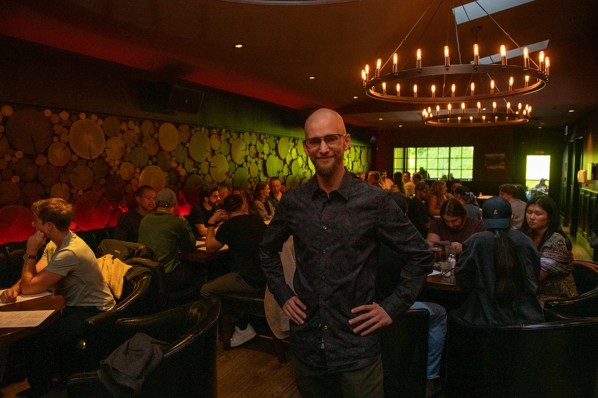

The Short Version
Jesse James Carver
For the first half of my life I believed that social influence was a gift handed to the naturally extroverted, and that I hadn't been given it. I was wrong. It's a way of paying attention that can be trained, and twenty years of fascination with social psychology has taught me how to guide people through that paradigm shift in attention.
My first training in it happened on stage. I performed close-up and stage magic from the age of ten and retired at fifteen, and long before I had language for it, I was learning to read where attention lives in a room and how to move it. When I put the magic down I kept studying the same question from every angle I could find, because it clearly ran deeper than card tricks. What I keep coming back to is this: social difficulty is almost always a perception problem. Anxious men walk into a room tracking an imagined version of it, and respond to that instead of to what's actually in front of them. Closing that gap is where this work begins.
Introvert to Influence is the distillation of everything I've learned since: how to build a high-level social circle that opens doors and real opportunity, and how to stop performing a life someone else assigned you. It's demanding work. It's also the most worthwhile I know.